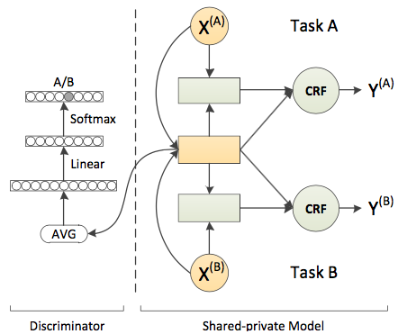
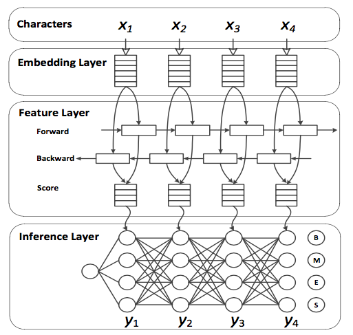
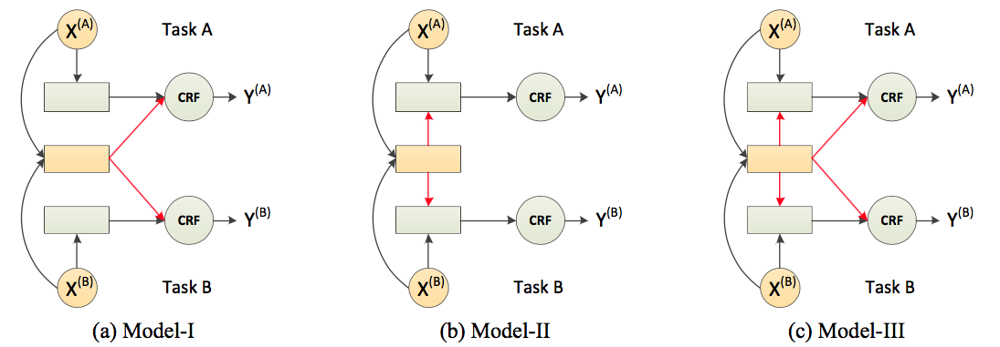

Adversarial Multi-Criteria Learning for Chinese Word Segmentation
Updated:
It is interesting to boost performance by exploiting common knowledge shared by various Chinese word segmentation(CWS) criteria. This paper proposed adversarial multi-criteria learning for CWS by integrating shared knowledge from heterogeneous segmentation criteria.
Model Overview
Various CWS criteria are supposed to bear some similarities. This can be modeled by shared features. To keep shared features criteria-invariant, adversarial strategy is in place. In Figure 1, yellow rectangle denotes shared feature layer, green rectangle represents private feature layer and green circle indicates conditional random field(CRF).

Figure 1. Model overview
General Neural Model for CWS
CWS problem can be regarded as a character based sequence labeling problem in which each character is labeled as one of $\phi = \{B,M,E,S\}$. Given sequence $X=\{x_1,x_2,…,x_n\}$, the aim is to find $\hat{Y}=\{y_1,y_2,…,y_n\}$ which maximizes
$$
\hat{Y} = \mbox{argmax p} (Y|X)
$$
As in Figure 2, neural CWS model usually can be summarized as 1) embed 2)encode 3)predict. In this paper, bi-LSTM is used to encode and CRF is used to predict. Below is how to use CRF to infer tags:
$$\begin{eqnarray}
p(Y|X) = \frac{1}{Z(Y)} \prod_{i=2}^{n}\psi(X,i,y_{i-1}, y_{i}) \\
\psi(X,i,y,y^`) = \exp(s(X,i)_y + b_{yy^`}) \\
s(X,i) = W_s^T\vec{h}_i+\vec{b}_s \\
\end{eqnarray}$$

Figure 2. Neural CWS model
Combine Shared and Task Specific Features
Based how to combine shared and task specific features, there are 3 kinds of structures as in Figure 3.

Figure 3. Model variants
Adversarial Training for Shared Features
In order to guarantee shared Features are criteria-invariant, a discriminator is set up to infer the criterion by look at shared features, and a generator is used to decide how shared features should look like. The harder for the discriminator to tell the criterion the better shared features picked by the generator.
Objective Functions
Firstly, conditional probability of $p(Y|X)$ needs to be maximumed , that is
$$
O_{seg}(\Theta^m, \Theta^s) = \sum^{M}_{m=1}\sum^{N_m}_{i=1} \log p(Y_{i}^{(m)}|X_{i}^{(m)};\Theta^m, \Theta^s)
$$
Then, the discriminator is to maximize the cross entropy of predicted criterion and true criterion distribution. In other words, every data sample is decomposed to shared features and private features and discriminator adjusts itself to the best to infer which dataset the sample comes from by looking only at shared features.
$$
O_{adv}^d(\Theta^d) = \sum^{M}_{m=1}\sum^{N_m}_{i=1} \log p(m|X_{i}^{(m)};\Theta^d, \Theta^s)
$$
While the generator aims to maximize the entropy of predicted criterion distribution so that make inferring criterion hard for discriminator.
$$
O_{adv}^g(\Theta^s) = \sum^{M}_{m=1}\sum^{N_m}_{i=1} H(p(m|X_{i}^{(m)};\Theta^d, \Theta^s))
$$
where $H(\cdot)$ is an entropy of distribution instead of negative cross-entropy like in [2]. By combining them, final objective function is obtained
$$
O(\Theta, D) = O_{seg}(\Theta^m, \Theta^s) + O_{adv}^d(\Theta^d) + \lambda O_{adv}^g(\Theta^s)
$$
Training Details
- When using adversarial strategy, after training 2400 epochs (each epoch only trains on eight batches from different corpora), $O_{seg}(\Theta^m, \Theta^s)$ is optimized with $\Theta^s$ fixed until convergence (early stop strategy).
- Embedding size and hidden size both are 100.
- Initial learning rate is set to 0.01.
- Loss weight coefficient $\lambda$ is set to 0.05.
- Keeping 80% inputs on embedding layer.
- Batch sizes of AS and MSR datasets are 512 and 256 respectively, and 128 for remains.
Experiment Conclusions
After experimenting on eight prevalent CWS datasets from SIG-HAN2005 and SIGHAN2008. Below is concluded:
- Multi-criteria learning boosts performance and adversarial training enhances performance further.
- Adversarial strategy is effective to prevent criterion specific features from creeping into shared space.
- The shared layers can be transferred to the other related tasks.
References
[1] Xinchi Chen et al. Adversarial Multi-Criteria Learning for Chinese Word Segmentation. ACL 2017.
[2] Yaroslav Ganin et al. Domain-adversarial training of neural networks. Journal of Machine Learning Research. 2016